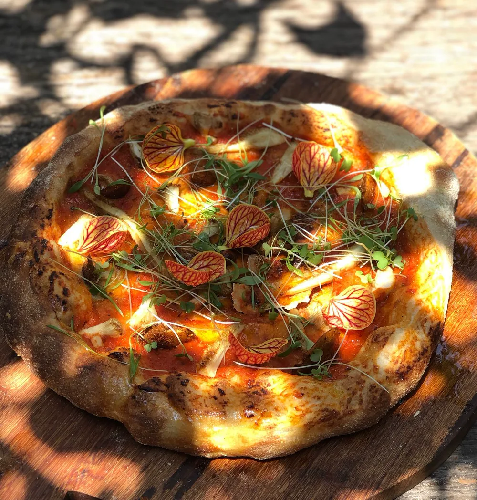

Curso de Pizza Artesanal
Próxima turma: sábado, 29/08/2026 · 17h às 22hver agenda →Sábado, das 17h às 22h · Uma noite com massa, molho, risadas e vinho. Você aprende a pizza de longa fermentação do zero — e termina a noite com forno aceso, taças tilintando e uns 20 sabores passando pela mesa. Hmmmm.

O que você vai viver
Noite de massa e forno
- Vai preparar duas massas de pizza com as próprias mãos
- Vai aprender todo o processo da pizza de longa fermentação
- Vai levar suas duas massas pra casa, prontas pra assar quando quiser
- Vai comer pizza. Muita pizza. A gente monta e assa cerca de 20 sabores diferentes pra degustar com a turma
O que está incluso
- Todos os ingredientes e utensílios para o preparo
- Apostila digital (PDF) com teoria e receitas
- Suas duas massas prontas pra levar
- Degustação à vontade no final — forno quente, pizza rolando
Traga sua bebida favorita
Se quiser, traga sua bebida favorita: um vinho, um espumante ou uma cerveja especial para acompanhar a degustação e a conversa. A bebida não está inclusa na oficina, mas combina com uma noite gostosa de forno aceso, pizza quentinha e gente reunida.
Onde é?
No quintal da nossa casa — o mesmo lugar onde nasceu a Pão de Verdade. Um ambiente de plantas, cerâmica, madeira, forno e calma, onde a gente aprende fazendo.
📍 Rua Mário Pinto Sobrinho, 176 — Santa Mônica, Uberlândia (casa verde)
Pra quem é
Pra quem ama pizza de verdade. Pra quem quer aprender com calma, leveza e diversão. Pra quem quer viver uma noite diferente, com quem ama ou pra si.
Pagamento seguro via Mercado Pago — Pix ou cartão em até 12x.
Garantir minha vaga — R$275 💬 Falar no WhatsAppQuer fazer Pizza e Pão no mesmo dia? Reserve também a vaga do Pão (8h às 13h) — os dois cursos são no mesmo sábado, no mesmo lugar.
Turmas pequenas, vagas limitadas. Confirmação da inscrição após o pagamento.
"Melhor pizza do mundo!!"
Ikê · aluna do curso de Pizza
"Super recomendo, experiência fantástica"
Katia · aluna do curso de Pizza
Olha só essas turmas de pizza
Posts reais das nossas oficinas de pizza — direto do Instagram. Forno aceso, gente feliz e vinho na mesa. Sua vez!
Carregando…
Ficou com alguma dúvida?
Preciso ter experiência para participar?
Posso fazer o curso de Pizza e o de Pão no mesmo dia?
Qual é a data e o horário?
A pizza é de fermentação natural?
Quantas massas eu faço e levo pra casa?
Quantos sabores vou degustar?
Posso usar ingredientes comuns em casa?
Preciso de forno profissional ou equipamentos especiais?
Preciso levar alguma coisa?
Uma noite pra lembrar — e uma pizza de verdade
Duas massas prontas pra levar, uma mesa cheia de sabores e a companhia que faz tudo ficar melhor. Ficou com alguma dúvida? Chama a gente no WhatsApp.
Ficou alguma dúvida? Fale comigo